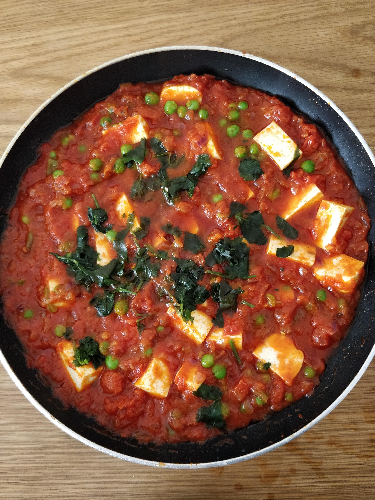

Matar Paneer
tags: indiana paneer ervilha
Descrição
Curry indiano com molho de tomate, ervilha e paneer.
Ingredientes
- 200g de paneer em cubos
- 2 colheres de sopa de Ghee (ou manteiga clarificada)
- 1 colher de chá de semente de cominho
- 1 cebola média picada
- 1 pimenta verde picada
- 2 colheres de chá de pasta de alho e gengibre
- ½ colher de chá de curcuma em pó
- 1 ½ colher de chá de pimenta vermelha em pó
- 2 colheres de chá de coentro em pó
- 1 ½ copos de purê de tomate fresco (uns 4 tomates médios) ou uma lata de molho de tomate
- 1 copo de ervilha fresca (congelada)
- Sal a gosto
Mise en place
- Preparar o purê de tomate fresco: bater os tomates lavados no liquidificador
Modo de preparo
- Em uma panela, refogue o ghee e as sementes de cominho. Deixe eles estourarem e então adicione a cebola. Espere até elas ficarem translucidas.
- Adicione a pimenta verde, a pasta de alho e gengibre e deixe refogar por um minuto.
- Adicione o curcuma, a pimenta vermelha em pó, coentro em pó and deixe refogar até que a cebola esteja cozida.
- Agora adicione a pasta de tomate fresco, sal e deixe refogar ou o ghee comece a aparecer dos lados.
- Então adicione as ervilhas, o paneer e deixe refogar por 1-2 minutos.
- Adicione um pouco de água e deixe ferver por 5-6 minutos até ter um caldo meio grosso.
- Jogue coentro fresco por cima e sirva.
Comentários
Pode servir com arroz basmati ou naan.